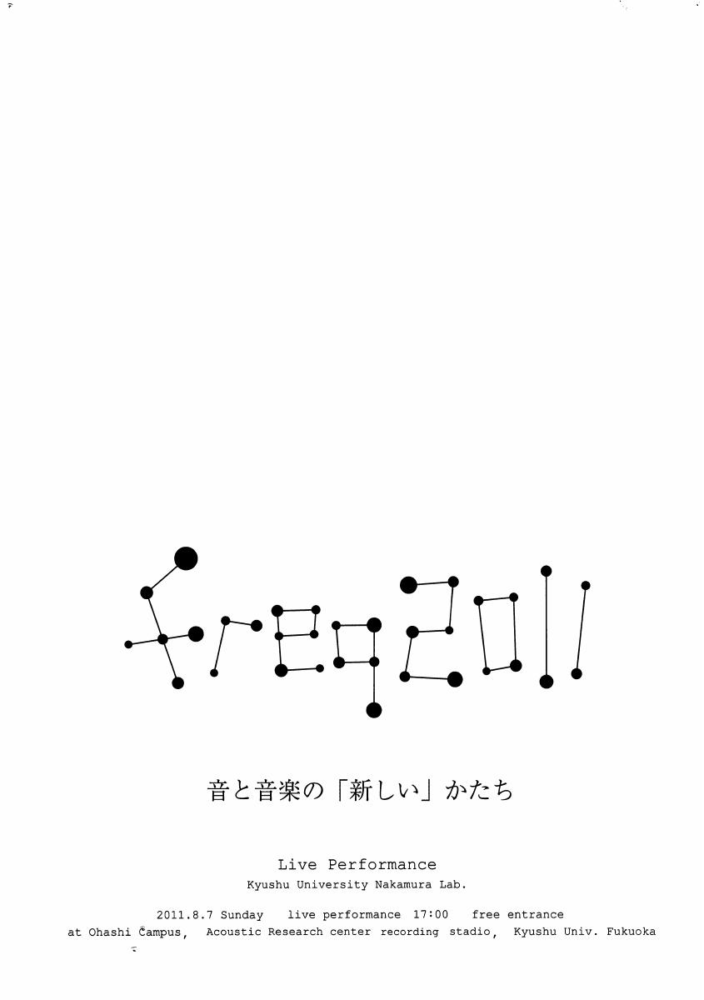

freq2011 音と音楽の「新しい」かたち
2011
- 日時
- 2011年8月7日（日）開場 12:30 活動紹介・公開リハーサル 13:00〜／ライブパフォーマンス 17:00〜
- 会場
- 九州大学大橋キャンパス 音響特殊棟2F 録音スタジオ（無料）
- 主催
- 九州大学中村研究室
- 運営統括
- 小寺未知留
- 参加アーティスト（フライヤーの表記）
- 川尻大輔
小山桂
新美太基
松村智弘
夏天長
小島順一
土下竜人
長濱裕太郎（予定） - 運営スタッフ
- 石田耕太郎
岡田知子
岸本麻友美
小寺未知留
迫田鈴菜
佐藤李里
久田茂輝
藤原尚紀 - 協力
- TRP
照明屋 - デザイン
- 竹内満衣子
テクノロジーと音・映像の関わり合いから生まれる表現を追求する場として、2001年から毎年開催されてきた freq の2011年版。サウンド・パフォーマンスとインタラクション作品を発表したほか、オープンキャンパスにあわせて公開リハーサルと活動紹介も行いました。
作品はパンフレットの作品解説によります。パンフレットのスケジュール欄では、ライブパフォーマンスとして Brain Wire／Tabémon／ワールドワイドカリンガ族／M.M／ニヌファブシ が並んでおり、作品解説とは名称・区分が一部異なります。参加アーティストはフライヤーの表記で、作品解説の作者とは一部異なります。
展示
- 川尻大輔、松村智弘《Tabémon》
- 青木一生《oscillaters》
- 長濱裕太郎《orthogo》
- 小寺未知留《つぶして捨てなあかんでえ》
- 久田茂輝《スクリャービンの世界への誘い》
ライブパフォーマンス
- 川畑泰子、菅原知恵子《Brain Wire》
- 小山桂、新美太基《サバカラカリンガ》
- 藤原尚紀《M.M》
- 土下竜人《ニヌファブシ》
資料

フライヤー（表面）- フライヤー（PDF）
- パンフレット（PDF）